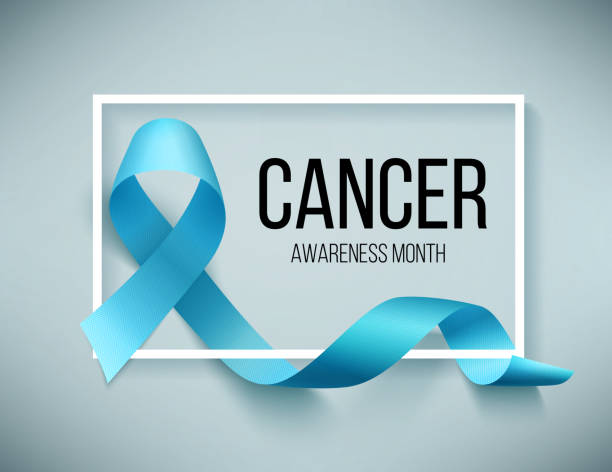
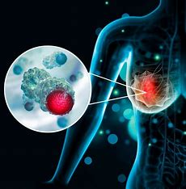
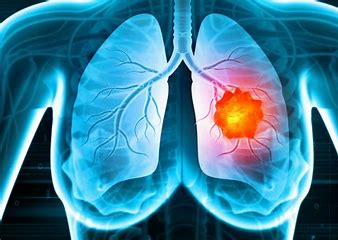
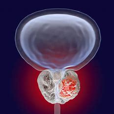
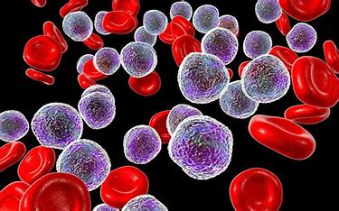
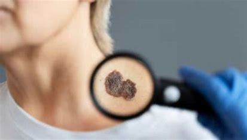

<!DOCTYPE html>
<html lang="en">
<head>
  <meta charset="UTF-8" />
  <meta name="viewport" content="width=device-width, initial-scale=1.0"/>
  <title>Cancer Awareness</title>
  <style>
    body {
      font-family: 'Segoe UI', Tahoma, Geneva, Verdana, sans-serif;
      margin: 0;
      padding: 0;
      background: #fefefe;
      color: #333;
      line-height: 1.6;
    }
    header {
      background: linear-gradient(135deg, #e53935, #b71c1c);
      color: #fff;
      padding: 2rem 1rem;
      text-align: center;
      animation: fadeInDown 1s ease-out;
    }
    nav {
      background: #fff3f3;
      padding: 1rem;
      text-align: center;
      position: sticky;
      top: 0;
      z-index: 999;
      box-shadow: 0 2px 5px rgba(0,0,0,0.1);
    }
    nav a {
      margin: 0 12px;
      color: #c62828;
      text-decoration: none;
      font-weight: bold;
      transition: color 0.3s;
      cursor: pointer;
    }
    nav a:hover {
      color: #7f1d1d;
    }
    section {
      display: none;
      padding: 2rem 1rem;
      max-width: 960px;
      margin: auto;
      animation: fadeIn 0.6s ease-in;
    }
    section.active {
      display: block;
    }
    h2 {
      color: #b71c1c;
      border-bottom: 2px solid #ffcdd2;
      padding-bottom: 0.5rem;
    }
    ul {
      padding-left: 20px;
    }
    form input, form textarea, form button {
      width: 100%;
      padding: 10px;
      margin: 8px 0 16px;
      border: 1px solid #ccc;
      border-radius: 6px;
      font-size: 1rem;
    }
    form button {
      background: #d32f2f;
      color: #fff;
      border: none;
      cursor: pointer;
      transition: background 0.3s ease;
    }
    form button:hover {
      background: #b71c1c;
    }
    blockquote {
      font-style: italic;
      color: #555;
      background: #fff7f7;
      border-left: 4px solid #e53935;
      padding: 1rem;
      border-radius: 6px;
    }
    .cancer-type-grid {
      display: flex;
      flex-wrap: wrap;
      gap: 1rem;
    }
    .cancer-type-card {
      flex: 1 1 calc(100% - 1rem);
      background: #fff7f7;
      border-radius: 10px;
      overflow: hidden;
      box-shadow: 0 2px 8px rgba(0,0,0,0.1);
      transition: transform 0.2s;
    }
    .cancer-type-card:hover {
      transform: scale(1.03);
    }
    .cancer-type-card img {
      width: 100%;
      height: 160px;
      object-fit: cover;
    }
    .cancer-type-card div {
      padding: 1rem;
      text-align: center;
    }
    @media(min-width: 600px) {
      .cancer-type-card {
        flex: 1 1 calc(48% - 1rem);
      }
    }
    @media(min-width: 900px) {
      .cancer-type-card {
        flex: 1 1 calc(30% - 1rem);
      }
    }
    @keyframes fadeIn {
      from { opacity: 0; transform: translateY(30px); }
      to { opacity: 1; transform: translateY(0); }
    }
    @keyframes fadeInDown {
      from { opacity: 0; transform: translateY(-30px); }
      to { opacity: 1; transform: translateY(0); }
    }  </style>

</head>
<body>

  <header>
    <h1>Cancer Awareness</h1>
    <p>Learn more. Act early. Support each other.</p>
    

  </header>

  <nav>
    <a onclick="showSection('home')">Home</a>
    <a onclick="showSection('about')">About Cancer</a>
    <a onclick="showSection('types')">Types</a>
    <a onclick="showSection('prevention')">Prevention</a>
    <a onclick="showSection('support')">Support</a>
    <a onclick="showSection('contact')">Contact</a>
    <a onclick="showSection('creator')">Creator</a>
  </nav>

  <section id="home" class="active">
    <h2>Welcome to Cancer Awareness</h2>
    <p>Our mission is to educate, support, and inspire those affected by cancer. Learn about different types of cancer, how to prevent them, and how to support others on this journey.</p>
    <blockquote>"Cancer is a word, not a sentence."</blockquote>
    <h3>Our Vision</h3>
    <p>To create a world where every individual is informed about cancer and empowered to take action for early detection, prevention, and support.</p>
  </section>

  <section id="about">
    <h2>About Cancer</h2>
    <p>Cancer is a disease in which some of the body’s cells grow uncontrollably and spread to other parts of the body. It can start almost anywhere and is usually named for the organ or type of cell where it begins.</p>
    <p>Cancer develops when the body’s normal control mechanism stops working. Old cells do not die and instead grow out of control, forming new, abnormal cells. These extra cells may form a mass of tissue, called a tumor.</p>
  </section>

  <section id="types">
    <h2>Types of Cancer</h2>
    <div class="cancer-type-grid">
      <div class="cancer-type-card" onclick="showSection('breast-cancer')" style="cursor:pointer;">
  

  <div><strong>Breast Cancer</strong><br>Click to learn more.</div>
</div>
      <div class="cancer-type-card" onclick="showSection('lung-cancer')" style="cursor:pointer;">
  

  <div><strong>Lung Cancer</strong><br>Click to learn more.</div>
</div>
      <div class="cancer-type-card" onclick="showSection('prostate-cancer')" style="cursor:pointer;">
  

  <div><strong>Prostate Cancer</strong><br>Click to learn more.</div>
</div>
      <div class="cancer-type-card" onclick="showSection('colorectal-cancer')" style="cursor:pointer;">
  

  <div><strong>Colorectal Cancer</strong><br>Click to learn more.</div>
</div>
      <div class="cancer-type-card" onclick="showSection('leukemia')" style="cursor:pointer;">
  

  <div><strong>Leukemia</strong><br>Click to learn more.</div>
</div>
      <div class="cancer-type-card" onclick="showSection('skin-cancer')" style="cursor:pointer;">
  

  <div><strong>Skin Cancer</strong><br>Click to learn more.</div>
</div>
    </div>
  </section>


  
</section>

<section id="breast-cancer">
  <h2>Breast Cancer</h2>
  <p>Breast cancer is one of the most common cancers affecting women worldwide. It originates in the breast tissue and can occur in both men and women, though it is far more common in women. Early detection through screening significantly increases survival rates.</p>
  <ul>
    <li><strong>Risk Factors:</strong> Gender (female), age, family history, genetic mutations (e.g., BRCA1 and BRCA2), alcohol consumption, obesity, hormone replacement therapy</li>
    <li><strong>Symptoms:</strong> Lump in the breast or underarm, change in breast shape or size, skin dimpling, nipple discharge, or pain</li>
    <li><strong>Diagnosis:</strong> Mammograms, ultrasounds, MRIs, and biopsy of breast tissue</li>
    <li><strong>Treatment:</strong> Surgery (lumpectomy or mastectomy), radiation therapy, chemotherapy, hormonal therapy, and targeted therapy</li>
    <li><strong>Prevention:</strong> Regular self-exams, clinical breast exams, maintaining a healthy lifestyle, genetic counseling if high risk</li>
  </ul>
</section>

<section id="lung-cancer">
  <h2>Lung Cancer</h2>
  <p>Lung cancer originates in the lungs and is strongly associated with smoking, but it can also occur in non-smokers due to exposure to radon, asbestos, or air pollutants. It is the leading cause of cancer-related deaths worldwide.</p>
  <ul>
    <li><strong>Types:</strong> Non-small cell lung cancer (NSCLC) and small cell lung cancer (SCLC)</li>
    <li><strong>Symptoms:</strong> Persistent cough, coughing up blood, chest pain, shortness of breath, hoarseness, weight loss</li>
    <li><strong>Diagnosis:</strong> Chest X-rays, CT scans, sputum cytology, and lung biopsy</li>
    <li><strong>Treatment:</strong> Depends on the type and stage but can include surgery, radiation therapy, chemotherapy, targeted therapy, and immunotherapy</li>
    <li><strong>Prognosis:</strong> Early-stage detection significantly improves survival rates</li>
  </ul>
</section>

<section id="prostate-cancer">
  <h2>Prostate Cancer</h2>
  <p>Prostate cancer develops in the prostate gland and is one of the most common cancers among men. Though often slow-growing, it can sometimes be aggressive and spread quickly.</p>
  <ul>
    <li><strong>Risk Factors:</strong> Age (over 50), family history, African ancestry, high-fat diet</li>
    <li><strong>Symptoms:</strong> Difficulty urinating, blood in urine or semen, erectile dysfunction, pelvic pain</li>
    <li><strong>Screening:</strong> PSA blood test and digital rectal exam (DRE)</li>
    <li><strong>Treatment:</strong> Active surveillance, surgery (prostatectomy), radiation therapy, hormone therapy, chemotherapy</li>
    <li><strong>Outlook:</strong> High survival rate when detected early</li>
  </ul>
</section>

<section id="colorectal-cancer">
  <h2>Colorectal Cancer</h2>
  <p>Colorectal cancer starts in the colon or rectum and usually develops slowly over several years. It often begins as small, noncancerous polyps that can become cancerous over time.</p>
  <ul>
    <li><strong>Risk Factors:</strong> Age (50+), diet high in red or processed meats, lack of physical activity, obesity, smoking, alcohol use</li>
    <li><strong>Symptoms:</strong> Changes in bowel habits, blood in stool, abdominal discomfort, weakness, unexplained weight loss</li>
    <li><strong>Diagnosis:</strong> Colonoscopy, biopsy, stool tests, imaging scans</li>
    <li><strong>Treatment:</strong> Surgery to remove polyps or tumors, chemotherapy, radiation therapy, targeted therapies</li>
    <li><strong>Prevention:</strong> Regular screening and healthy lifestyle choices</li>
  </ul>
</section>

<section id="leukemia">
  <h2>Leukemia</h2>
  <p>Leukemia is a cancer of the body's blood-forming tissues, including the bone marrow and the lymphatic system. It typically involves the overproduction of abnormal white blood cells.</p>
  <ul>
    <li><strong>Types:</strong> Acute and chronic forms, including lymphocytic and myeloid types</li>
    <li><strong>Symptoms:</strong> Fatigue, frequent infections, fever or chills, unexplained weight loss, swollen lymph nodes, easy bruising or bleeding</li>
    <li><strong>Diagnosis:</strong> Blood tests, bone marrow biopsy, genetic testing</li>
    <li><strong>Treatment:</strong> Chemotherapy, radiation, targeted therapy, stem cell transplant, immunotherapy</li>
    <li><strong>Monitoring:</strong> Regular follow-up is crucial for long-term remission</li>
  </ul>
</section>

<section id="skin-cancer">
  <h2>Skin Cancer</h2>
  <p>Skin cancer is the abnormal growth of skin cells, most often developing on skin exposed to the sun. It is one of the most common but also one of the most preventable cancers.</p>
  <ul>
    <li><strong>Types:</strong> Basal cell carcinoma, squamous cell carcinoma, and melanoma (the most serious type)</li>
    <li><strong>Warning Signs:</strong> New or changing moles, sores that don’t heal, irregular borders, color changes</li>
    <li><strong>Risk Factors:</strong> UV exposure, fair skin, history of sunburns, family history</li>
    <li><strong>Prevention:</strong> Use sunscreen, wear protective clothing, avoid tanning beds, check skin regularly</li>
    <li><strong>Treatment:</strong> Surgery, cryotherapy, topical medications, laser therapy, immunotherapy for advanced cases</li>
  </ul>
</section>

<section id="prevention">
    <h2>Prevention</h2>
    <ul>
      <li>Avoid tobacco and limit alcohol</li>
      <li>Maintain a healthy diet</li>
      <li>Exercise regularly</li>
      <li>Protect skin from sun exposure</li>
      <li>Get regular screenings and check-ups</li>
      <li>Get vaccinated against cancer-causing infections (like HPV)</li>
    </ul>
  </section>

  <section id="support">
    <h2>Support</h2>
    <p>Support is essential for individuals with cancer. Families, friends, and communities can offer emotional, physical, and financial help.</p>
    <ul>
      <li>Join a support group</li>
      <li>Access counseling services</li>
      <li>Get involved with cancer charities or events</li>
      <li>Stay informed and connected with healthcare providers</li>
    </ul>
  </section>

  <section id="contact">
    <h2>Contact Us</h2>
    <form>
      <label for="name">Name:</label>
      <input type="text" id="name" name="name" required>

      <label for="email">Email:</label>
      <input type="email" id="email" name="email" required>

      <label for="message">Message:</label>
      <textarea id="message" name="message" rows="4" required></textarea>

      <button type="submit">Send</button>
    </form>
  </section>

  <section id="creator">
  <h2>Meet the Creator</h2>
  <div style="background:#fff7f7; padding:2rem; border-radius:10px; box-shadow:0 2px 10px rgba(0,0,0,0.1); max-width:600px; margin:auto; text-align:center;">
    
    <h3 style="margin:0; color:#b71c1c; font-size:1.4rem;">Karlo Sulit</h3>
    <p style="font-size:1rem; margin:0.5rem 0 1rem; color:#555;">Nursing Student, Our Lady of Fatima University</p>
    <p style="color:#444; margin-bottom:0.5rem;"><strong>Email:</strong> <a href="mailto:jpsulit6787qc@student.fatima.edu.ph" style="color:#d32f2f; text-decoration:none;">jpsulit6787qc@student.fatima.edu.ph</a></p>
    <p style="color:#444; margin-bottom:0.5rem;"><strong>Contact:</strong> 09627291509</p>
    <p style="color:#444;"><strong>Facebook:</strong> <a href="https://facebook.com" target="_blank" style="color:#d32f2f; text-decoration:none;">Karlo Sulit</a></p>
    <p style="margin-top:1rem; font-style:italic; color:#666;">“Empowering awareness, one life at a time.”</p>
  </div>
</section>

  <script>
    function showSection(id) {
      document.querySelectorAll('section').forEach(section => {
        section.classList.remove('active');
      });
      document.getElementById(id).classList.add('active');
      window.scrollTo(0, 0);
    }
  </script>

<footer style="background:#b2dfdb; text-align:center; padding:1rem; font-size:1rem; color:#004d40; font-family:sans-serif;">
  &copy; 2025 DEVELOPED BY- SULIT, JOHN KARLO P.- STUDENT FROM OUR LADY OF FATIMA UNIVERSITY QC
</footer>

</body>
</html>
